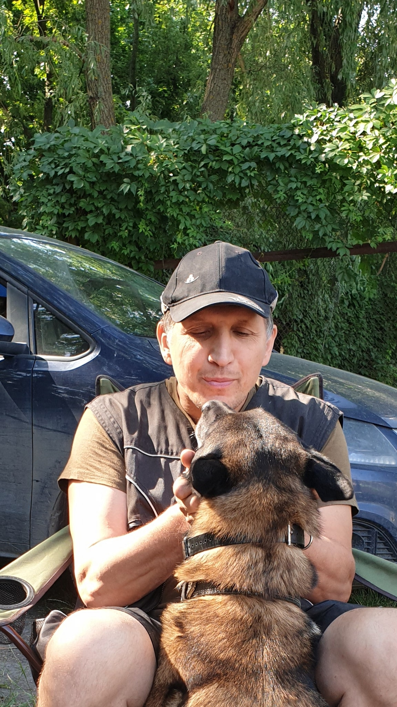
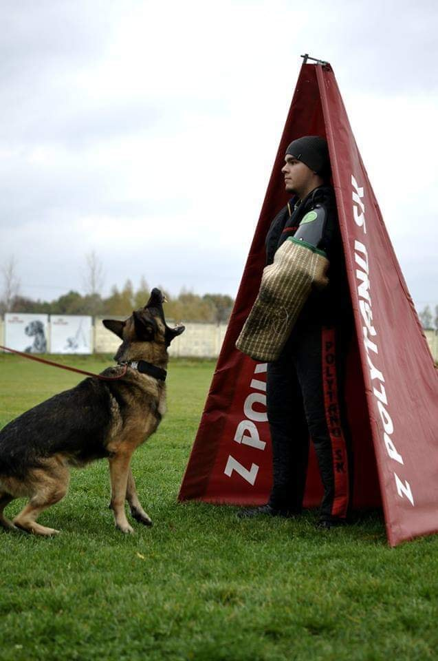

Амуниция для собаки - как одежда для Вас.Она должна быть удобной, практичной, надежной, красивой и при этом - доступной.Позвольте нам одеть Вашу собаку так, чтобы выделяться в толпе не кричащей безвкусицей ширпотреба, но элегантной красотой, удобством и проверенной временем надежностью классики.Не покупайте дорогое, покупайте лучшее!

Групповые тренировки
Команда кинологического клуба проводит групповую дрессировку собак. Программа включает общий курс дрессировки, помогает животному социально адаптироваться в среде
Узнать больше...
Индивидуальные тренировки
Команда кинологического клуба проводит индивидуальную дрессировку собак. Опытный кинолог разработает специальную программу для каждой собаки
Узнать больше...
Спортивные тренировки
Специалисты кинологического клуба предлагают дрессировку собак на защиту. Пройдя курс в нашем клубе, ваш пес сможет открыть в себе новые качества
Узнать больше...